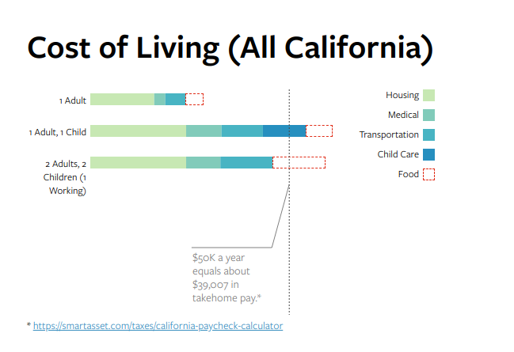

The stigma placed on recipients of food stamps — that they just don’t want to work, that they are exploiting the system — is not only misguided, it’s incorrect. More importantly, this stigma prevents or delays people from seeking help that they need. People of all backgrounds receive food stamps, but the vast majority of them were already struggling to make ends meet when they were hit with an a job loss or reduction in hours, or an unexpected expense, often due to illness or disability. We’ve taken a deep dive into our applicant data, and have gathered their stories to provide a more accurate picture of who receives food assistance in America.
People who have never been on food stamps often think that they are for people who are somehow different from them. In fact, food stamps are a way of coping with a challenge that almost everyone is familiar with: making ends meet. The most common dilemma GetCalFresh applicants mention in their applications is not being able to afford food after paying for rent, utilities, and gas or fare to get to work.
Outside observers often try to place the blame on food stamps recipients for their situation. Yet, the most common challenge that our applicants face is one that Californians knows well. California’s high cost of living is a systemic problem that leaves most residents more vulnerable if they unexpectedly lose income or have an increase in expenses. The figure below shows the difference between the money required to pay for essentials in each California county and the median income in those counties.
"I use... my income for food, children's expenses, gas, and my automobile payment. Obtaining food stamps would aid my family tremendously."
This data tell a story of stress: the typical household in several counties is already struggling to make ends meet. These households have no slack in their incomes - they already cannot keep up with the bare necessities. Figure X shows how costs of living typically break out by county.
A single car accident, medical emergency, or unexpected layoff can put a family over their budget for months, often forcing a choice between something as essential as food, housing, or medical care.
"I am in the process of getting hired at an on campus job in university housing, [but] I am struggling to cover extra school fees and books. I am trying to further my future by earning a degree to one day be financially stable and available to help others in need."
This is a section where we would talk about reasons why the general public would apply for CalFresh to make ends meet. It'll probably be longer than this.
Here we'll talk about CalFresh applicants who want to find better jobs.
Visualization, more quotes, etc goes here.
This is a section where we would talk about reasons why the general public would apply for CalFresh to make ends meet. It'll probably be longer than this.
Here we'll talk about CalFresh applicants who are affected by disability and illness.
"Quote from person here."
Visualization, more quotes, etc goes here.